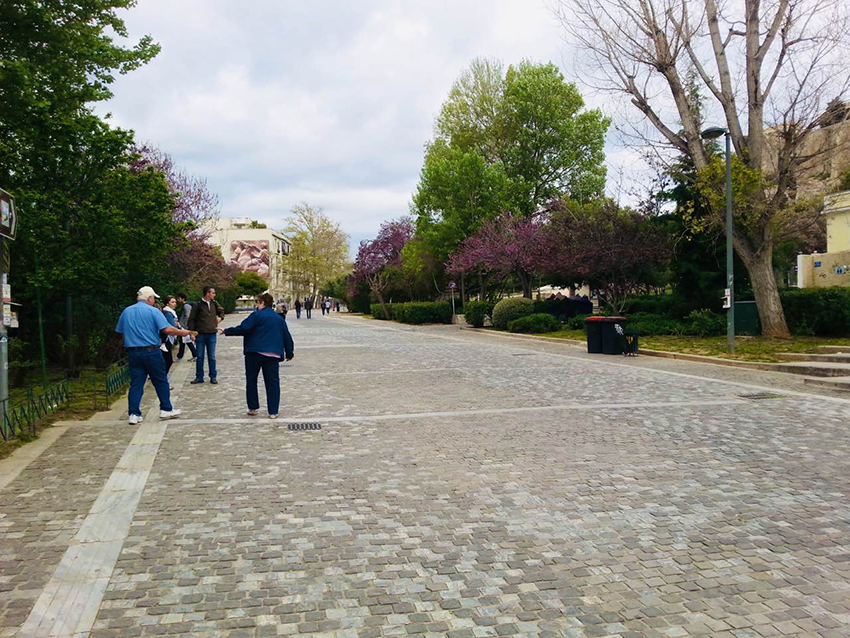
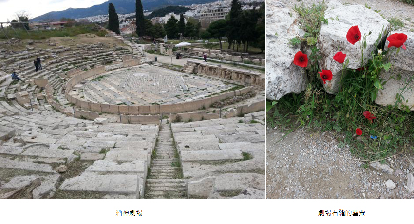
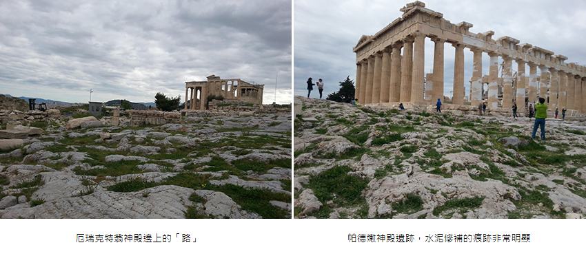
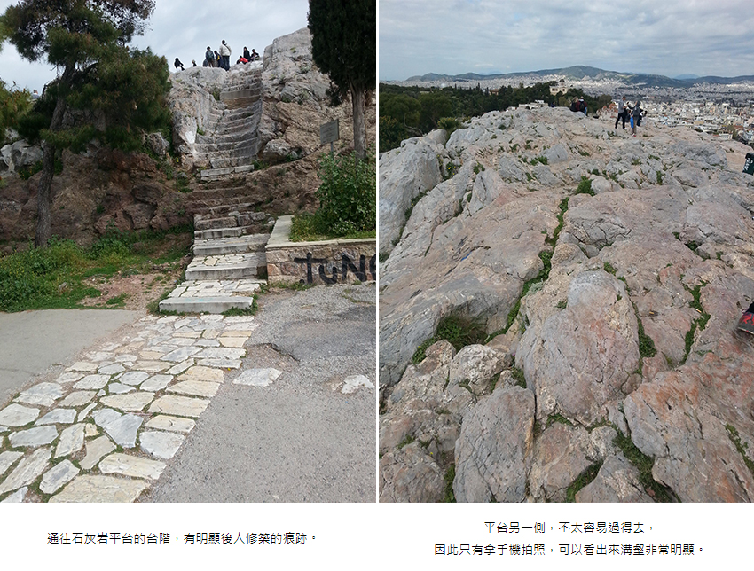
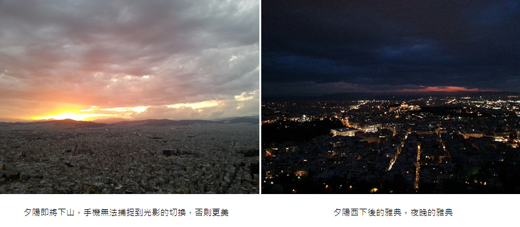

那時候我在德國實習，歐洲人的復活節總是盛大，總有7~10天不等的假期。
「去希臘吧！」
與實習友人一起從德國，搭著高鐵到了捷克布拉格轉乘飛機，先飛到了塞爾維亞（這輩子就沒想過會以轉機的方式踏上塞爾維亞），再從塞爾維亞轉機去雅典…是的，窮學生總是以省錢為第一要件，吃苦什麼的，對當年窮得只剩下時間的我，值得！
由於友人認為羅德島對他的吸引力更勝於雅典，飛機落地後，旋即與友人分別，他去往了通向羅德島的港口；而我則先去了一趟天空之城—卡蘭巴卡，碰巧與在卡蘭巴卡認識的中國朋友們行程一致，大家一同回雅典。
大家在地鐵上依然在開心的聊天，其中一位友人想到，雅典的夜晚不是太安全，可以陪我回青年旅館，對於他的提議我非常開心的接受了，畢竟旅遊論壇上多的是提醒到雅典旅遊注意扒手等等，有認識的人願意陪同那是最好不過了。
於是我們倆與其他人分開下車，雅典的夜晚是紫色的，我總感覺雅典的天空不曾真正暗下來過，她總是保留著那麼一點自己的任性，自己的顏色。
通往青年旅館的路上，我問了他等等如何回去和其他人會合，他說：「我等等把那邊房退了，直接住這邊就好。」我說：「這樣太麻煩了，而且這邊有沒有空床讓你住還不知道呢！這是青旅喔，上下鋪的那種。你們應該不會住上下舖！」 他說：「沒事，我們額外開一間就好，肯定有的。」
當下我聽到當場傻眼，隱隱有著憤怒，不是好心陪我走回來嗎？為什麼要額外開房間？
強忍著不悅，我冷下聲音來：「不需要，我已經訂好住宿，沒有要改的意思。」不斷不斷地，與我掰扯了一路，試圖說服我。當我們抵達青年旅館，櫃檯是一個爺爺，為了不讓他說話，我立刻對爺爺說我已經訂好房，要辦入住，沒想到……那人伸手攔下我的資料，對爺爺說：「把她房退了，另外開一間兩人房。」
我當場變臉，差點沒和他吵起來，嚴正拒絕他，直接跟他說我不退宿。對於這種擅作主張人，真的讓人感冒，何況還是這種牽涉「人身安全、人身自由」的「事故」，深感被冒犯。我轉頭和爺爺說我不退房，我要辦入住！爺爺看都不看那個男的，就問我一句：「你有要跟這個先生住嗎？」
一臉氣憤：「沒有」
「沒有的話，這是你的鑰匙，你可以上樓了！」
謝過爺爺，我接過鑰匙直接上樓，一個眼角餘光都不留給他。
這輩子第一次覺得原來「爺爺」能如此帥，如此果斷，如此睿智。
那年我21歲，「收獲」了人生第一個荒謬故事，噢，差點翻車變成事故的那種故事。
洗漱完畢，收拾了一下行李，入睡前拿起旅遊日記本，特別記下了這「濃墨重彩」，氣死人不償命的一筆。
隔天一早，拋開昨晚的糟糕的心情，打開地圖確認好衛城方向，出發，可惜前台沒看到爺爺，不能再次和他道謝。
衛城，Acropolis，本身的意義代表著高處的城邦，或者是山丘上的城市。要正式踏上衛城之前，首先進入的是衛城公園，四月的衛城公園裡繁花盛開，雖然風大雲層厚，太陽光被遮擋，公園的色彩難有陽光下的明豔，然而，在這米白灰作為基底的希臘，依然鮮明。
|  |
| 衛城公園 - 雲層太厚，外加當年手機畫素不好，拍不出色彩鮮明的公園。 |
首先進去參觀了衛城博物館，這是一座在2009年正式落成的博物館，由於雅典歷史悠遠，這博物館的選址非常有趣，地基是……古羅馬浴場遺址，為了讓我們也能參觀到古羅馬浴場，這博物館的地板，到處用的都是強化玻璃，個人認為整個博物館最大賣點除了古羅馬浴場遺址之外，就是雅典娜女神像，以及從英國手中要回來的六女神柱真跡；這個博物館並不大，花了一個多小時參觀完畢後，我就正式踏上了星矢戰鬥一路的衛城。
親自走一回衛城，會發現它的聲名大噪是人們靠想像力渲染出來的，它真正的色彩是希臘式的米白色、溫婉的米黃色；它處處彰顯著端莊、對稱及嚴謹。高聳的宮殿柱有找到當年那麼些巍峨的氣勢，因為這些宮殿並不完整，或者可用破敗來形容。
石灰岩被歲月磨的光滑，米白色的柔光靄般地籠罩著整個山丘，靜靜地展示著曾經的輝煌。甫一進入，映入眼簾的先是酒神劇場，破碎的大理石陣依舊陳列著當年的規模，歲月的消磨，讓整個劇場都帶著一些滄桑；我在石縫中找到了艷麗的生機，幾朵豔紅色的花，差點被埋沒在暮氣之中，很久很久的後來，我才知道這花叫做罌粟。暮色之中的瑰麗，讓人難以忽視它的存在；然而它又真的太微弱了，分毫改變不了整場的色彩，因而我在心中默默譜著，如果……如果罌粟開滿了整個劇場，那台上的表演者，估計也要黯然失色了吧。
|  |
一路往上爬，衛城作為防禦要塞無愧其名，這陡峭程度搭配上形狀不一、凹凸不平的石灰岩地板，讓我們這些不專業的「侵入者」，一頓好爬。與其說沿途是「路」，不如說是，被人們踩的稍微平整的石灰岩，落腳處走哪兒，哪便是路，還頗有那麼點人生哲理存在。
繼續走到厄瑞克特翁神殿，這是著名的六女神柱所在的神殿，目前宮殿上的六根女神柱，皆是仿真品，其中五根真跡，希臘已經從大英博物館手上要回來，收藏在衛城博物館，第六根柱子，仍在大英博物館收藏著。持續往上，來到了帕德嫩神殿那一刻……甚麼叫做「夢想很豐滿，現實很骨感」，來一趟希臘，走訪一趟衛城，保證對這句話深有體會！
這些宮殿，包含不在衛城山丘上的宙斯神殿，其實都一樣荒蕪，兩千年的歷史對這些遺跡造成的影響不是一星半點，幾乎是毀滅式的，只留下了「遺跡」，希臘式建築的對稱美？有的，沒垮掉的宮殿靠自己腦補，確實夠對稱；衛城的宮殿有美麗的壁畫？我相信歲月磨平他的痕跡之前，美麗巍峨的壁畫是存在的。處處都在修補，靠著水泥，澆灌上殘敗的宮殿，或者說，連宮殿都看不見了，只剩下殘破的地基。
那是四月，天還冷，我穿著黑色厚襖，裹著白色圍巾，還記得當時那種充斥於心的撼動，這是衛城！我踏上了衛城的山丘！踏上了從小看著的希臘神話中的那個衛城！
於是，出於對這些神話中神殿的憧憬，我只站在宮殿旁遠觀，畢竟近看，對一個膜拜者而言，太殘忍。
|  |
邊上有個陡峭的小丘，前幾階台階明顯是後來砌的，平整到看不出歲月的痕跡；與小丘接軌後，土黃色、灰色明顯看得出是前人留下的歷史的痕跡。石灰岩一面一面一頁一頁的，記錄下了當年的故事。
遊客們不斷爬到平台上去，我也跟著往上爬。必須說，這還真是個不平整的平台，整個台面因為地質因素，本就有許多凹陷，如同前面幾張照片一樣，凹凸不平；同時又因為給平台拋光的人太多了，一人好幾腳把整個不平的台面磨的光滑，真的都要能反光了，我也因為鞋底不防滑，差點扭傷腳。找了好一會兒才找到一個方便下腳又不危險的位置，嗯，是的，平台另一側約等於斷崖，斜坡都沒有！
四月的歐洲還是挺冷，春風刮的骨頭生寒，拉高圍巾在平台上找塊平坦處坐下，一個人慢悠悠地俯瞰大半個雅典，忽略掉嘈雜的人聲，真空掉自己的心緒，一時間，突然可以體會到希臘神話中山丘聖殿神光普照的平和遼闊、靜謐、莊嚴；如果，遊人少一些，這種感受會更加強烈吧。慢慢走下衛城，一個人細品聖墟，米色、白色、米灰交映著曾經的輝煌，或許燃燒到極致，綻放璀璨的黃金年代之後，依然是要趨於平和的，現在的雅典就是這樣走過來的吧。
|  |
朝著雅典的制高點──利卡維多斯山丘前進，這兒有個纜車，另一個學妹也過來雅典與我碰頭，我們打算一起去看夜景。找到纜車入口處後，我們買了票跟著隊伍前進，由於逼近黃昏時分了，纜車上的人不減反增，看夜景的人太多了。進車廂後，沒有甚麼太特別的，就是同車廂剛好有個亞洲面孔，皮膚曬得有些黑，不是一眼能確認來處的臉孔；由於中國遊客很多，我和學妹選擇用台語聊著天，最後我們倆決定，去問一下這個年紀看著和我們差不多大的男生，來自哪裡。
“Hello, may we know, where are you from?” 我倆笑著問道。
「挖細呆丸郎！」他笑著回答我們。
當下我和學妹笑的不行，他告訴我們，早在我們聊天的時候就注意到我們了，如果我們沒有開口，他也會來跟我們聊天。歐洲的台灣人真的太少了，偶遇稀有品種的台灣人，真好。聊著天，大家互換了臉書，發現竟然有共同朋友！一問之下才知道，他是我朋友的學弟，和我同年，在西班牙當交換學生，一樣是復活節出來旅行。
隨著夕陽西下，我們三人站在山丘上，看著變幻自如的雅典，米白色的建築倘佯在夕陽光影調和成的色澤中，由米白、米黃、黃色、橙黃、暗藍、暗灰直至墨藍色；再由街燈瞬間點亮雅典人的動向，它在當中，自如伸展。
聖墟雅典，或許是沾染上暮氣了，但，永遠能為自己增添顏色的它，又有誰能說它是遲暮呢？
|  |